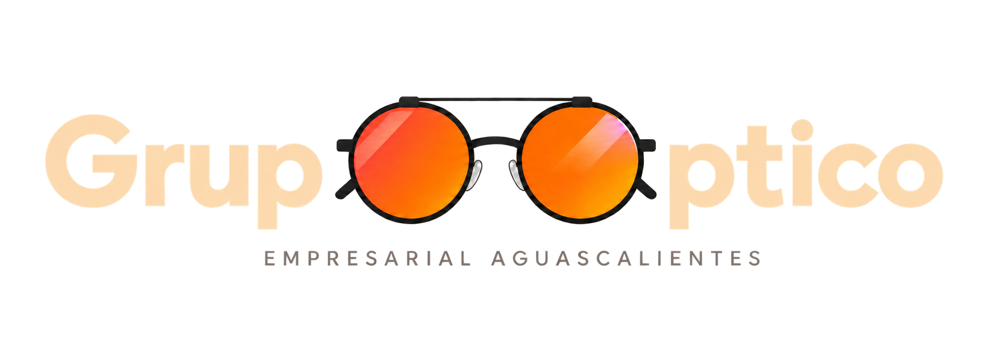
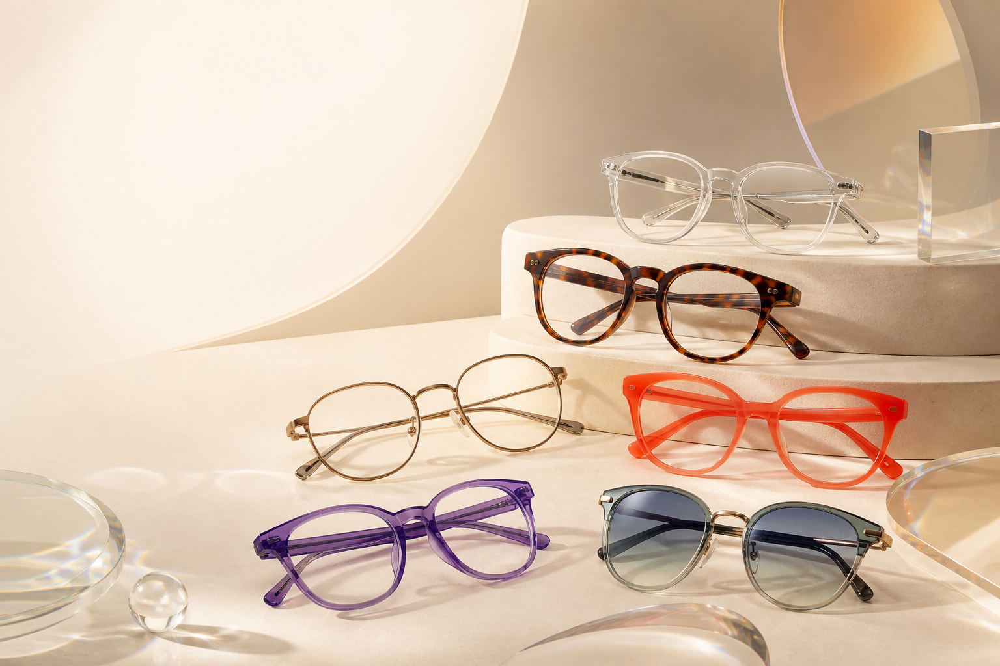
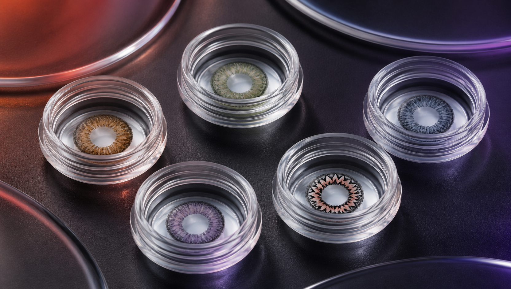
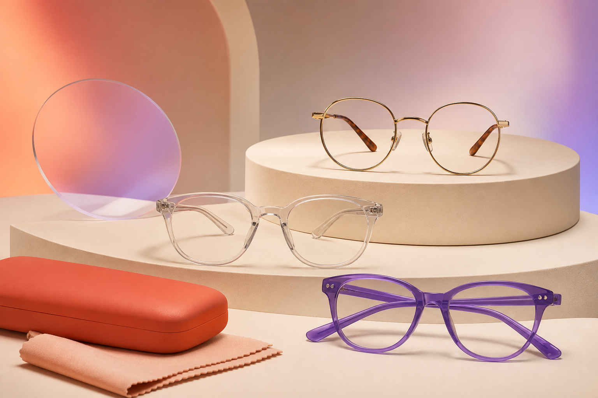
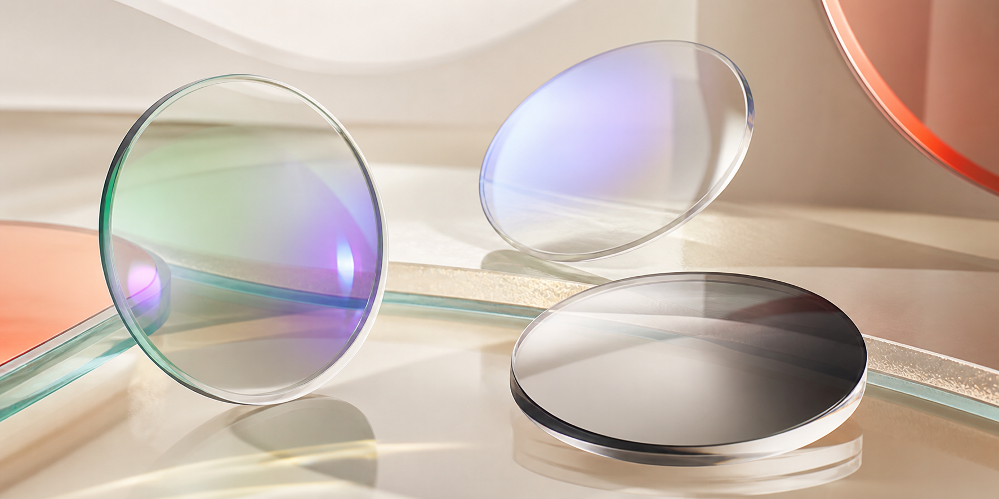
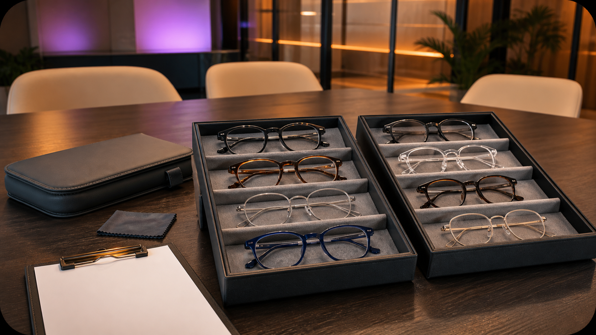

01
Lentes graduados
Encuentra armazones y micas adaptados a tu graduación, estilo y presupuesto, con asesoría para elegir la opción adecuada.
Solicitar información

Óptica 100 % mexicana en Aguascalientes
Encuentra lentes graduados, de sol y de contacto, recibe un examen de la vista gratuito y conoce nuestras soluciones para empresas.
Productos y servicios
Desde lentes graduados hasta opciones de protección solar y lentes de contacto, te ayudamos a encontrar una solución adecuada para tu estilo, necesidades visuales y presupuesto.
01
Encuentra armazones y micas adaptados a tu graduación, estilo y presupuesto, con asesoría para elegir la opción adecuada.
Solicitar información02
Protege tus ojos y complementa tu estilo con diferentes diseños, colores y opciones de protección solar.
Conocer modelos03
Conoce nuestras opciones de lentes de contacto y recibe orientación para encontrar una alternativa adecuada para ti.
Solicitar orientación04
Recibe un examen de la vista gratuito para conocer tus necesidades visuales y obtener orientación sobre tu graduación.
Agendar examen05
Vendemos lentes inteligentes Meta y adaptamos micas graduadas para que disfrutes su tecnología sin descuidar tus necesidades visuales.
Preguntar por lentes MetaLentes de contacto
Conoce nuestras opciones de lentes de contacto y recibe orientación para encontrar una alternativa adecuada para tus necesidades visuales, actividades y preferencias.
Solicitar orientación
01
Elaborados con materiales flexibles y disponibles en distintas presentaciones y esquemas de reemplazo.
02
Opciones de material firme que requieren una valoración y adaptación adecuada para cada persona.
03
Diseñados para determinadas graduaciones con astigmatismo, de acuerdo con las necesidades visuales de cada paciente.
04
Alternativas que permiten modificar o resaltar el color de los ojos, con opciones sujetas a disponibilidad y valoración.
05
Diseños especiales para caracterizaciones, eventos o disfraces, sin dejar de lado una adaptación y uso adecuados.
Todos los lentes de contacto, incluidos los de color y fantasía, requieren valoración, adaptación, higiene y cuidados adecuados.
Opciones accesibles
Conoce nuestras opciones básicas de lentes y encuentra una alternativa que se adapte a tus necesidades visuales y presupuesto.
Preguntar por paquetesConsulta disponibilidad, características incluidas y condiciones.

Tecnologías y diseños para tus micas
Conoce las diferentes tecnologías disponibles para tus micas y recibe orientación para elegir una opción de acuerdo con tus actividades, preferencias y presupuesto.

Menos reflejos
Es un tratamiento aplicado a las micas que disminuye los reflejos provocados por diferentes fuentes de luz y ayuda a que los lentes luzcan más transparentes.
Para tu rutina digital
Es una tecnología diseñada para filtrar parte de la luz azul-violeta que proviene de pantallas y otras fuentes de iluminación artificial.
Adaptación a la luz
Sus micas cambian de tonalidad al exponerse a la luz ultravioleta y vuelven gradualmente a ser claras cuando disminuye la exposición.
Visión a diferentes distancias
Integran diferentes graduaciones en una misma mica para facilitar la visión lejana, intermedia y cercana.
Atención para empresas
Acercamos nuestros productos y servicios ópticos a empresas de Aguascalientes mediante una atención organizada, accesible y adaptada a las necesidades de sus colaboradores.

01
Coordinamos la atención con cada empresa para acercar nuestros servicios ópticos a sus colaboradores.
02
Orientamos a cada persona para conocer sus necesidades visuales y las opciones disponibles según su presupuesto.
03
Preparamos una propuesta de atención de acuerdo con las necesidades y características de cada organización.
Experiencia empresarial
Hemos brindado atención óptica a colaboradores de empresas ubicadas en Aguascalientes y Zacatecas.
¿Te interesa llevar nuestros servicios ópticos a tu empresa?
Solicitar una visitaContacto
Comunícate con Grupo Óptico Empresarial Aguascalientes para solicitar información, conocer nuestros productos o programar una visita.
Teléfono fijo: 449 994 1683
WhatsApp: 449 244 0758